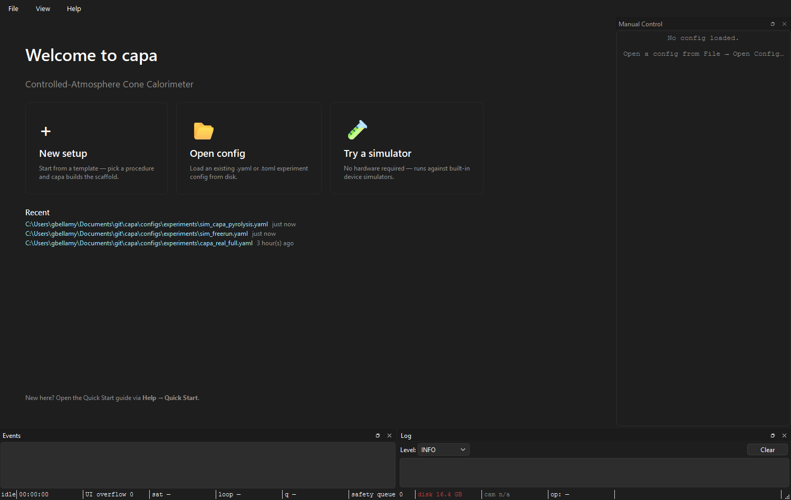

Your first real run¶
Audience: operators bringing up real hardware for the first time on a known-good rig — the rig PC works, devices are wired up, gas supply is connected, somebody else has run a successful experiment here within the last week. Scope: the walk-through from "rig is sitting there" to a sealed bundle.
If you haven't already, work through the simulator quick start first — this page builds on the same narrative and skips the parts that are unchanged from simulator to real hardware.
About 90% of CAPA experiments hold a single heater setpoint and are run as free runs (no method). This page is written for that case. The 10% that need a method overlay the Method tab onto the same sequence below.
Pre-flight checklist¶
Before launching capa:
- Gas supply on, regulators set to the supply pressures the MFCs expect. Carrier gas (typically N₂) flowing.
- Exhaust on. Building exhaust and the rig's local extraction. You'll be flowing combustion products even on a simulator-equivalent profile.
- Leak-check timestamp current. If the last leak-check on the reactor is older than your lab's policy window, redo it before loading any sample.
- Sample loaded in the holder, holder in the reactor, lid sealed.
- No one is leaning on the balance. A casual elbow during tare ruins the mass curve.
Now launch:
1. Open the right hardware-matching config¶
The welcome screen shows three cards (New setup, Open config, Try a simulator) and the Recent list of recently-opened configs.

Pick the config for this rig. Real-rig configs live alongside the
simulator ones in configs/experiments/ — typically named after the
rig (capa_real_full.yaml, capa_cone.yaml, etc.). The choice
determines which hardware TOML capa expects to drive, so loading a
simulator config against a real rig (or vice-versa) is the first thing
to get right.
If you're the first operator of the day, Recents will have what the last person ran; that's usually the right starting point.
The central pane swaps from the welcome hero to the Setup tab. The connection strip at the top reads:
◐ Draft has N unsaved edit(s) — Apply & Connect to take effect.
…or, if no edits have happened yet:
◐ Config loaded — Apply & Connect to open hardware.
2. Verify the hardware mapping¶
Click Hardware → Devices in the outline. The table lists every device the config expects — Watlow, Alicat, NI-DAQ, Sartorius, cameras. For each row, confirm:
- Transport is correct (
com_port=COM5,host=192.168.1.10). Wrong port → Apply will fail. - Channel mapping matches what the wiring crew used. The Channels section shows which physical input each named channel pulls from.
If the rig has changed since the config was saved (somebody re-cabled a thermocouple, moved a heater zone), use ⋮ → Scan for devices to re-detect what's actually on the bus and update the mapping (Discovery dialog).
3. Load the calibration set¶
Hardware → Channels has a calibration column on each row. The values shown reflect the calibration set most recently applied to that channel. If the entries match the calibrations posted near the rig (typically dated cards), you're done — skip to step 4.
If they don't match, open the per-row calibration popover (the Calibration plot dialog) and import from the right calibration set on disk. The calibration diff dialog will spell out exactly what's changing.
The calibration snapshot — the point-in-time copy that gets recorded into the bundle — is captured at Apply & Connect time, not at draft-edit time. A snapshot only persists after a successful apply.
4. Fill in the CAPA profile¶
Experiment → CAPA Profile is the section to fill in for a real run. Per CAPA profile fields:
- Atmosphere: carrier gas + flow targets.
- Specimen: mass (post-tare), form, holder geometry.
- Heat-flux setpoint and the calibration source for it.
- Leak-check timestamp (from your pre-flight).
These don't change the run — they record what was measured. Five years from now this is what tells you whether two bundles are comparable.
Also fill in Experiment → Operator & sample — operator id (stamped into every event) and sample id (used in the run-id line on the Run tab).
5. Apply & Connect¶
Click Apply && Connect on the connection strip. The strip cycles:
- ◐ blue → Connecting — opening hardware…
- ● green → Connected — draft matches rig.
If you get a red ✗ instead:
✗ Last apply failed — detail.
…click Details… for the full error. Common first-real-run failures:
- Wrong COM port for the Watlow. Fix in Devices, retry.
- NI-DAQ chassis not powered. Power up, retry.
- Camera in use by another process. Close the other process.
- Calibration set references a channel that doesn't exist. Re-pick in the Channels section.
The Setup tab refuses to leave the FAILED state until you edit the draft or retry — there's no flash-and-fade misread to worry about.
6. Switch to the Run tab¶
The state badge reads Idle. The run-identity line reads
sample: <id> · procedure: <id> · Free run (or Method: <name>).
The plot pane shows empty axes for every channel.
The status bar along the bottom is now live — the simulator-pill values are real:
sat ok— no producer is stuck waiting on bridge space.loop <small number> ms— conductor heartbeat is on time.q 1/64or so — nothing queued up.disk <N>% free— enough headroom for the bundle.
If any pill is yellow before you've even started, see status bar guide — there's a problem and now is the time to find it.
7. Start¶
Click Start. The badge moves through:
Preparing…(warn) — conductor opens the session, arms workers.Running(green) — samples flowing, plot lines drawing.
The elapsed timer starts counting up. The manual control dock flips to write-blocked mode — its buttons disable so you don't fight the conductor for command authority.
8. Watch the run¶
There's no automation here — you watch the rig and the status bar.
satgoing yellow: a producer is blocked. Look atloopnext: high loop lag → CPU on conductor; low loop lag → downstream (disk, camera encode, slow subscriber). See status bar guide.loopred: something on the conductor loop is doing heavy synchronous work. Most often aCustomStepin a procedure plugin that forgotanyio.to_thread.run_sync.- Plot lines flat-lining or wild: the data tells you about the rig, not the software. Trust your eyes; if it doesn't look right, abort.
Cold abort vs. hot abort:
| Situation | Click | What it does |
|---|---|---|
| "I want to end early but everything's fine" | Stop run | Graceful cooldown, bundle sealed. |
| "Something's wrong, I want out now" | Emergency stop (hold 1 s) | Skip cooldown wait, bundle still sealed. |
| "The GUI is unresponsive and the rig is dangerous" | Hit the physical e-stop, kill the process | See aborting safely. |
Both Stop and Emergency seal the bundle. Neither loses recorded data.
9. Stop & confirm¶
When the procedure ends naturally — or when you click Stop — the badge
cycles Draining… → Finalizing… → Sealed. The status bar's
bundle: pill displays the path of the newly-sealed bundle.
Open Help → Open logs folder to see the bundle on disk:
runs/<run_id>/manifest.json is the index card, scalars.parquet is
the data, events.sqlite is the log. See
reviewing a run for what to do
next.
The Run tab's run-identity line now reads:
run: 2026-05-24T143012Z_A12 (completed)
If it says (aborted), that means you (or the safety system) stopped
the run — expected after Stop / Emergency. If it says (crashed),
something abnormal happened; see
crash recovery.
Next runs¶
You don't need to close capa between runs. The next run typically just needs:
- A new sample loaded.
- The Operator & sample fields updated (new sample id).
- Click Apply & Connect to capture the change. See what Apply & Connect actually does.
- Switch to Run, Start.
See daily workflow for the cadence across a full session.
See also: Quick start (simulator), The Setup tab, Aborting safely, CAPA profile fields, Status bar guide.